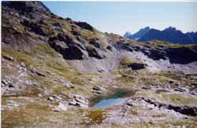

tête S de la Louie Blanche (2644 m)

Départ : parking au bas du télésiège de la Traversette (2000 m)
Aller : 4 km, +700 m, 140 min
Retour : 4 km, - 700 m, 95 min
Difficulté : E
Période : août - septembre
Remarque : en juillet, la neige interdira souvent la montée au passage de la Louie Blanche.
Bibliographie : -
Course décrite page 128.
Après le passage de la Louie Blanche et son lac, on fera attention sur l’éperon (voir photo) à ne pas monter la sente allant à l’arête, mais au contraire à descendre dans une cuvette pierreuse. Plus loin on ne tiendra pas compte d’une marque rouge à mi-pente.
Ignorant ce petit sommet, on peut rejoindre le col de la Louie Blanche, mais le passage devient un peu plus délicat et pierreux.
D’anciennes grosses marques blanches jalonnent au retour cet itinéraire. Nous n’avons pas été autorisés à les entretenir, on suivra donc plutôt les cairns.
Possibilité de partir de l’Hospice, mais la piste de ski menant au col de la Traversette n’est pas encore suffisamment réengazonnée.
Photo : on monte à la croupe (la sente passe juste au-dessus du lac sur la photo, gros bloc), puis on continue dans la même direction (descente vers une combe pierreuse)